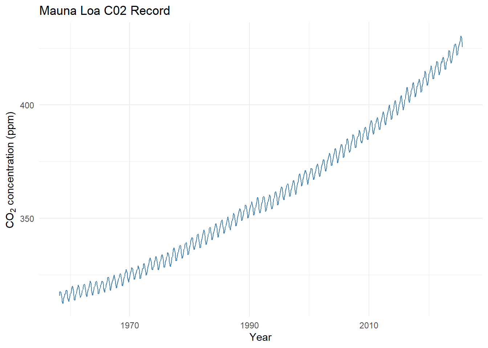

Appendix D Workbook Week 3: Models and Growth
D.1 Learning Goals
In this chapter, you’ll build both conceptual understanding and practical modeling skills.
By the end, you should be able to:
- Explain the structure of a mathematical model
- Identify variables, parameters, functions, initial conditions, and boundary conditions in an environmental system.
- Construct a conceptual model
- Create a diagram or influence map showing the main components and feedbacks in a system (e.g., a fishery, carbon cycle, or pollutant pathway).
- Translate that conceptual model into a quantitative form—an equation or simulation—that captures its essential dynamics.
- Create a diagram or influence map showing the main components and feedbacks in a system (e.g., a fishery, carbon cycle, or pollutant pathway).
- Simulate system behavior
- Work directly with a provided R model (linear, exponential, or logistic) to explore how changes in parameters such as the growth rate (\(r\)) or carrying capacity (\(K\)) affect system outcomes.
- Fit models to data
- Use observational data (e.g., cod fishery population time series) to estimate parameters, visualize model fits, and interpret model accuracy (RMSE, residuals).
- Interpret model parameters ecologically
- Describe what each parameter represents in real terms—e.g., how \(r\) relates to reproduction or how \(K\) reflects habitat limits.
- Explore uncertainty and sensitivity
- Conduct parameter sweeps and “what-if” simulations to see which assumptions most influence model predictions.
- Evaluate models as decision tools
- Use the logistic-harvest model to test management scenarios (e.g., sustainable vs. overharvest conditions).
- Discuss the implications of stochasticity (“bad years”) for population resilience.
- Use the logistic-harvest model to test management scenarios (e.g., sustainable vs. overharvest conditions).
- Reflect on the modeling process
- Compare your conceptual model with the mathematical one and explain what each form helps you understand.
- Articulate how model simplicity versus realism affects insight and decision-making.
- Compare your conceptual model with the mathematical one and explain what each form helps you understand.
💡 Purpose of this section:
You’ll not only learn how to fit and simulate models, but also how to think like a modeler—starting from a conceptual diagram of a system, translating it into equations, running simulations, and interpreting what the results tell us about environmental processes and management trade-offs.
Working Definitions
In your own words define the following
Variable
Parameter
Function
Initial Condition
Boundary Condition
Activity: Build a Conceptual Model — “Water Levels in Lake Washington”
🎯 Purpose: To practice thinking like a modeler by building a conceptual model of water balance in Lake Washington. You’ll identify the main inputs, outputs, controls, and feedbacks that determine how lake levels rise and fall — just as we do in environmental modeling.
🌊 Background: Lake Washington’s water level is managed through the Hiram M. Chittenden (Ballard) Locks, which connect the lake to Puget Sound. Its level fluctuates with precipitation, river inflow, groundwater exchange, evaporation, and controlled outflow to the Locks. In summer, levels are lowered to protect dock structures and fish migration; in winter, levels rise naturally with rainfall. In short — Lake Washington is a dynamic system influenced by climate, management, and human use.
🧠 Part 1: Brainstorm the System: In small groups, sketch a conceptual model (boxes and arrows) of Lake Washington’s water balance.
Stocks (state variables):
Inflows:
Outflows:
Drivers and Controls:
🔄 Part 2: Identify Feedbacks
Positive feedbacks (reinforcing):
Negative feedbacks (stabilizing):
Label feedbacks with (+) or (–) arrows in your diagram.
🧩 Part 3: Translate to a Quantitative Model
Now imagine you had to model lake level \(L(t)\) mathematically.
- Try an write a functional relationship for the system.
- Identify your output variable and its relation to the input variables
💬 Part 4: Reflect
Discuss as a group:
- Which factors are natural and which are human-controlled?
- How might climate change affect this system?
- How could your conceptual model inform management decisions about flood control, salmon passage, or recreation?
- If you were to create a simulation model of this system - what kind of model category would it fall into?
- If you were to simulate this system in R, what assumptions would you need to make?
💡 Takeaway:
Conceptual models help simplify complex systems like Lake Washington into a few key relationships.
Before we ever write an equation or a line of code, conceptual modeling helps us clarify what processes matter — and how they interact.
Introduction to Curve Fitting
In science and engineering, we often collect data that show a clear trend — but rarely follow a perfect mathematical formula. Curve fitting is the process of finding a mathematical function that best describes the relationship between variables in a dataset.
By fitting a curve, we can:
- Summarize complex data with a simple equation.
- Estimate values between or beyond measured points (interpolation and extrapolation).
- Compare theoretical models to real-world observations.
- Identify patterns that reveal underlying processes — for example, exponential population growth, logistic saturation, or seasonal oscillations.
Curve fitting bridges the gap between data and models. It allows us to test hypotheses (“Does this population follow logistic growth?”), estimate parameters (like growth rate or carrying capacity), and assess how well our chosen model represents reality.
How Fitting Is Achieved
Curve fitting involves adjusting the parameters of a chosen mathematical model so that it best matches the observed data. The goal is to minimize the difference between the model’s predicted values and the actual data points — these differences are called residuals.
The most common method is least squares fitting, which minimizes the sum of the squared residuals. For a dataset with observed values \(y_i\) and model predictions \(\hat{y}_i\), the sum of squared errors (SSE) is:
\[ SSE = \sum_{i=1}^{n} (y_i - \hat{y}_i)^2 \]
The fitting process adjusts model parameters (such as slope, intercept, or growth rate) to make this SSE as small as possible.
A related measure is the Root Mean Square Error (RMSE), which provides an interpretable measure of average error in the same units as the data:
\[ RMSE = \sqrt{\frac{1}{n} \sum_{i=1}^{n} (y_i - \hat{y}_i)^2} \]
While the least squares method minimizes the total squared error, the RMSE summarizes how far, on average, the predictions are from the observed data. Lower RMSE values indicate a better fit.
In practice, curve fitting tools in R, Python, or MATLAB use numerical optimization algorithms to minimize SSE or RMSE automatically, allowing us to identify the parameters that best describe the observed trend.
Curve Fitting Example - CO2
# Load data, skipping metadata lines that start with '#'
co2_data <- read.table("Models/data/co2_data.txt",
header = FALSE,
comment.char = "#",
col.names = c("Year", "Month", "DecimalDate",
"CO2_Monthly", "CO2_Deseason",
"NumDays", "StdDev", "Uncertainty"))
# Check the first few rows
head(co2_data)## Year Month DecimalDate CO2_Monthly CO2_Deseason NumDays StdDev Uncertainty
## 1 1958 3 1958.203 315.71 314.44 -1 -9.99 -0.99
## 2 1958 4 1958.288 317.45 315.16 -1 -9.99 -0.99
## 3 1958 5 1958.370 317.51 314.69 -1 -9.99 -0.99
## 4 1958 6 1958.455 317.27 315.15 -1 -9.99 -0.99
## 5 1958 7 1958.537 315.87 315.20 -1 -9.99 -0.99
## 6 1958 8 1958.622 314.93 316.21 -1 -9.99 -0.99library(ggplot2)
ggplot(co2_data, aes(x = DecimalDate, y = CO2_Monthly)) +
geom_line(color = "steelblue") +
labs(title = "Mauna Loa C02 Record",
x = "Year",
y = expression("CO"[2]*" concentration (ppm)")) +
theme_minimal()
Fit a linear model By Eye
- Open and run curve_fit_co2_1.R
- Try to fit a trend line?
- What would make this task easier?
Fit a linear model By Eye Using Residuals
- Open and run curve_fit_co2_2.R
- How do the residuals help?
- What are you aiming for?
Fit a linear model to a Subset of the Data
- Open and run curve_fit_co2_3.R
- This app includes a magic butting that fits the parameters for you.
- Play around, see if you can fit a line to the last 10 years
- What is happening to the residuals?
- Ideas on how to fix this?
Fit an exponential model to a Subset of the Data
- Open and run curve_fit_co2_4.R
- Play around, see if you can fit a model to the last 10 years
- What is happening to the residuals?
- Ideas on how to fix this?
Fit an complex model
- Open and run curve_fit_co2_5.R
We’ve been layering complexity onto this model
Adding a sinusoid is a modeling trick - given the residuals have a sinusoidal shape, that gives us a hint that whatever we are ‘missing’ in our model could be represented as a sinusoid.
Play around
D.2 Lab: Building Your Own Population Model
Overview
In this lab, you will build, test, and refine population models using real or simulated ecological data.
By the end, you should be able to:
- Load and visualize population data
- Construct a conceptual model of population dynamics
- Fit and compare different population growth models
- Interpret model parameters in ecological terms
- Extend models to include harvesting and environmental variability
Task 1 – Load and Explore the Data
Load the dataset into R and create a simple plot to visualize the population through time.
Look for general patterns (growth, plateaus, declines, disturbances) and write down your observations.
Reflection:
What trends do you see?
Task 2 – Build a Conceptual Model
Draw a conceptual diagram (no equations yet).
Use boxes for key variables and arrows for relationships or feedbacks.
Reflection:
- What controls population growth?
- What limits it?
- What external factors could influence it?
Task 3 – Start Simple: Linear Growth Model
Write pseudo code to fit a linear growth model to the data.
Use a stepwise prompting strategy — begin with a basic line, then add complexity:
- Add interactive sliders to adjust parameters.
- Add diagnostic metrics (e.g., RMSE) to assess fit quality.
- Allow model fitting to subsets of the data.
Reflection:
- Why start with a linear model?
- Are there time periods where the population appears roughly linear?
- What questions could you answer with a linear model?
Task 4 – Extend to Logistic Growth
Replace the linear model with a logistic model:
\[ P(t) = \frac{K}{1 + A e^{-r t}} \]
Before coding, analyze this function analytically:
- What happens as each parameter (\(A\), \(K\), \(r\)) becomes small, large, or negative?
- What are reasonable ecological constraints on these parameters?
- What does each parameter represent in real-world terms?
Reflection:
Summarize your reasoning and expectations before testing numerically.
Task 5 – Fit the Logistic Model
Using the same stepwise prompting strategy, implement and test the logistic model numerically.
- Compare numerical results to your analytical expectations.
- Add plot features (e.g., equilibrium lines, shaded regions) to support your interpretation.
Reflection:
Did your results confirm your intuition?
How could you visualize uncertainty or residuals?
Task 6 – Introduce Harvesting
Scenario:
This species of fish was overfished in the 1970s. In the 1980s, fishing was banned to allow recovery.
Modify your logistic model to include a harvesting term.
Explore how harvesting rate affects long-term equilibrium and recovery trajectories.
Reflection:
- How does equilibrium population change with harvesting rate \(H\)?
- What happens if you extrapolate beyond your data?
Task 7 – Parameter Sensitivity (Sweep Analysis)
Write pseudo code to explore parameter sensitivity using loops.
Create visualizations showing:
- Equilibrium population vs. harvesting rate
- Sensitivity of population recovery to historical or future harvests
Be creative—surface plots, contour maps, or animations are all valid.
Reflection:
What parameters is the system most sensitive to?
What management implications might this have?
Task 8 – Adding Environmental Variability
Now lets question one of our model assumptions:
Is \(r\) (the intrinsic growth rate) really constant?
Create pseudo code that allows \(r\) to vary between good years and bad years:
- In a good year, \(r\) stays the same.
- In a bad year, \(r\) is scaled by a factor between 0 and 1.
Add sliders to adjust:
- The frequency of bad years
- The scaling factor for \(r\)
Reflection:
- How does stochasticity affect population resilience?
- How could models like this support adaptive management or conservation policy?
D.3 Readme: Interactive Linear Fit — Cod Population (Shiny)
This section introduces the Interactive Linear Model App designed to explore the Cod population dataset.
The accompanying README and source code provide an overview of the app’s structure and highlight the key code components that power its functionality, including data loading, model fitting, and visualization.
An interactive Shiny app for tuning a linear model by eye and comparing it to the ordinary least squares (OLS) best fit using RMSE as the reference metric.
All displayed values and sliders use 3 significant figures.
What this app does
- Loads a cod population time series (
Year,Pop) and creates a centered time variable
\(t = \text{Year} - \min(\text{Year})\) - Lets users interactively adjust a linear model:
\(\text{Pop}(t) = a + b \cdot t\) - Shows your equation and RMSE in real time and overlays the OLS (min-RMSE) line as a dashed reference
- Includes a “Snap to OLS” button to set sliders to the best-fit coefficients
- If
data/cod_timeseries.csvis missing, the app will fall back to synthetic demo data (noted in the UI)
Why this is useful
- Builds intuition for model form, slope/intercept interpretation, and error metrics (RMSE)
- Demonstrates the value of centering time (numerical stability, interpretability)
- Encourages hands-on exploration before relying on automated fitting
Requirements
- R (≥ 4.2 recommended)
- Packages:
shiny,tidyverse(specificallyreadr,dplyr, andggplot2)
Install once:
install.packages(c("shiny", "tidyverse"))File structure
#your-project/
#├─ app.R
#└─ data/
# └─ cod_timeseries.csv # Your dataset (optional; app falls back if missing)Expected CSV schema
- Required columns:
Year,Pop - Example (header + 5 rows):
csv
Year,Pop
1960,2.31
1961,2.45
1962,2.38
1963,2.52
1964,2.60
Note: Years don’t need to start at 0; the app internally creates \(t = \text{Year} - \min(\text{Year})\).
App controls & outputs
- Sliders:
- Intercept (a) – baseline population at the first observed year (since \(t = 0\) there)
- Slope (b) – rate of change in population per year
- Snap to OLS – sets
a,bto the least-squares solution - Equation & RMSE (your line) – updates dynamically
- Equation & RMSE (OLS) – fixed reference based on
lm(Pop ~ t)
Plot layers:
- Points → observed data
- Faint line → observed connection over time
- Solid line → your current (a, b)
- Dashed line → OLS reference line
Under the hood (key functions)
- Data load:
Centering time:
t = Year - min(Year)RMSE:
\(\text{RMSE} = \sqrt{\text{mean}\big((\text{obs} - \text{pred})^2\big)}\)OLS reference:
lm(Pop ~ t, data = cod)
Customization tips
Change y-axis label:
Editlabs(y = "Population (units)")in the plot section.Adjust slider ranges:
Modify thea_rngandb_rnglogic near the top of the script.Colors/line styles:
Tweak thegeom_line(...)aesthetics inrenderPlot.
Troubleshooting
Error: “Could not find function ‘read_csv’”
→ Install and load tidyverse:Blank app / load errors:
- Check that
data/cod_timeseries.csvexists and hasYear,Popheaders.
- If missing, the app uses synthetic demo data.
- Check that
Unexpected RMSE values:
Check data units and missing values. RMSE is computed withna.rm = TRUE.
Source Code
# app.R
# Interactive linear fit tuner (with best-RMSE reference) for cod population data
# All displayed values and sliders use 3 significant figures
library(shiny)
library(tidyverse)
# ---------------------------
# Data load (with safe fallback)
# ---------------------------
load_cod_data <- function() {
path <- "data/cod_timeseries.csv"
read_csv(path, show_col_types = FALSE) |>
select(Year, Pop) |>
arrange(Year)
}
cod <- load_cod_data() |>
mutate(t = Year - min(Year))
# ---------------------------
# Helpers
# ---------------------------
rmse <- function(obs, pred) sqrt(mean((obs - pred)^2, na.rm = TRUE))
# OLS (min-RMSE for linear model)
ols <- lm(Pop ~ t, data = cod)
a_best <- unname(coef(ols)[1])
b_best <- unname(coef(ols)[2])
best_rmse <- rmse(cod$Pop, fitted(ols))
# Slider ranges (reasonable defaults)
t_range <- range(cod$t, na.rm = TRUE)
pop_rng <- range(cod$Pop, na.rm = TRUE)
a_rng <- c(pop_rng[1] - 0.5 * diff(pop_rng),
pop_rng[2] + 0.5 * diff(pop_rng))
b_scale <- ifelse(diff(t_range) > 0, diff(pop_rng) / diff(t_range), 1)
b_rng <- c(-3, 3) * b_scale
# ---------------------------
# UI
# ---------------------------
ui <- fluidPage(
titlePanel("Interactive Linear Fit (3 sig figs): Cod Population"),
sidebarLayout(
sidebarPanel(
helpText("Model: Pop(t) = a + b * t with t = Year - min(Year)"),
sliderInput("a", "Intercept (a):",
min = signif(a_rng[1], 3), max = signif(a_rng[2], 3),
value = signif(a_best, 3),
step = signif(diff(a_rng) / 200, 3)),
sliderInput("b", "Slope (b):",
min = signif(b_rng[1], 3), max = signif(b_rng[2], 3),
value = signif(b_best, 3),
step = signif(diff(b_rng) / 200, 3)),
actionButton("snap", "Snap to OLS (min RMSE)"),
hr(),
strong("Your line:"),
verbatimTextOutput("eqn_user", placeholder = TRUE),
div("RMSE (your line):"),
h3(textOutput("rmse_user"), style = "margin-top:-8px;"),
hr(),
strong("OLS reference (dashed line):"),
verbatimTextOutput("eqn_best", placeholder = TRUE),
div("RMSE (OLS):"),
h4(textOutput("rmse_best"), style = "margin-top:-8px;")
),
mainPanel(
plotOutput("fitplot", height = 480),
br(),
tags$small(em(
if (file.exists("data/cod_timeseries.csv")) {
"Loaded data/cod_timeseries.csv"
} else {
"No data/cod_timeseries.csv found — using synthetic demo data."
}
))
)
)
)
# ---------------------------
# Server
# ---------------------------
server <- function(input, output, session) {
# Snap sliders to OLS on click
observeEvent(input$snap, {
updateSliderInput(session, "a", value = signif(a_best, 3))
updateSliderInput(session, "b", value = signif(b_best, 3))
})
# Predictions for user's sliders
preds_user <- reactive({
tibble(
Year = cod$Year,
t = cod$t,
Pred = input$a + input$b * cod$t
)
})
# Text outputs
output$eqn_user <- renderText({
paste0("Pop(t) = ", signif(input$a, 3),
" + ", signif(input$b, 3), " * t")
})
output$rmse_user <- renderText({
sprintf("%.3f", rmse(cod$Pop, preds_user()$Pred))
})
output$eqn_best <- renderText({
paste0("Pop(t) = ", signif(a_best, 3),
" + ", signif(b_best, 3), " * t")
})
output$rmse_best <- renderText({
sprintf("%.3f", best_rmse)
})
# Plot
output$fitplot <- renderPlot({
# Smooth lines for display
grid <- tibble(
Year = seq(min(cod$Year), max(cod$Year), length.out = 400)
) |>
mutate(t = Year - min(cod$Year),
Pred_user = input$a + input$b * t,
Pred_best = a_best + b_best * t)
ggplot(cod, aes(Year, Pop)) +
geom_point(size = 2, alpha = 0.9) +
geom_line(alpha = 0.35) +
# User-selected line
geom_line(data = grid, aes(y = Pred_user),
linewidth = 1, color = "#0072B2") +
# OLS (best fit)
geom_line(data = grid, aes(y = Pred_best),
linewidth = 1, linetype = "dashed", color = "grey40") +
labs(
title = "Cod Population with Interactive Linear Fit",
subtitle = paste0(
"a = ", signif(input$a, 3),
", b = ", signif(input$b, 3),
" | RMSE (yours) = ", sprintf("%.3f", rmse(cod$Pop, preds_user()$Pred)),
" | RMSE (OLS) = ", sprintf("%.3f", best_rmse)
),
x = "Year", y = "Population (units)"
) +
theme_classic()
})
}
shinyApp(ui, server)D.4 Readme: Interactive Logistic Fit — Cod Population (Shiny)
This section introduces the Interactive Logistic Model App designed to explore the Cod population dataset.
The accompanying README and source code provide an overview of the app’s structure and highlight the key code components that power its functionality, including data loading, nonlinear model fitting, and visualization.
An interactive Shiny app for tuning a logistic growth model by eye and comparing it to the nonlinear least squares (base R nls) best fit using RMSE as the reference metric.
All sliders and displayed values use 3 significant figures.
What this app does
- Loads a cod population time series (
Year,Pop) and creates a centered time variable
\(t = \text{Year} - \min(\text{Year})\) - Lets users interactively adjust a logistic model:
\(\text{Pop}(t) = \dfrac{K}{1 + A\,e^{-r t}}\) - Computes and displays your equation and RMSE in real time; overlays the best-fit (nls) curve as a dashed reference
- Provides a “Snap to Best Fit (nls)” button to set sliders to the converged
nlsparameters (if convergence succeeds) - Notes in the UI if
data/cod_timeseries.csvis missing (no synthetic data is auto-generated in this script)
Why this is useful
- Builds intuition for carrying capacity \(K\), initial position \(A\), and growth rate \(r\) in logistic dynamics
- Demonstrates practical nonlinear curve fitting with base R
nlsand comparison via RMSE
- Encourages exploratory model-based reasoning beyond straight lines
Requirements
- R (≥ 4.2 recommended)
- Packages:
shiny,tidyverse(specificallyreadr,dplyr,ggplot2)
Install once:
File structure
#your-project/
#├─ app.R
#└─ data/
# └─ cod_timeseries.csv # Your dataset (optional; app falls back if missing)Expected CSV schema
- Required columns:
Year,Pop - Example (header + 5 rows):
csv
Year,Pop
1960,2.31
1961,2.45
1962,2.38
1963,2.52
1964,2.60
Note: The app internally creates \(t = \text{Year} - \min(\text{Year})\). Years need not start at 0.
App controls & outputs
- Sliders:
- K (carrying capacity) – asymptotic upper bound
- A (initial position) – positions the curve at \(t=0\) relative to \(K\)
- r (growth rate) – controls how quickly the curve rises (sign permits decline if negative)
- Snap to Best Fit (nls) – sets
K,A,rto the convergednlssolution (if available) - Equation & RMSE (your curve) – updates as you move sliders
- Equation & RMSE (best fit) – fixed reference from
nls(or a message ifnlsfailed to converge)
Plot layers:
- Points → observed data
- Faint line → observed connection over time
- Solid line → your current logistic curve
- Dashed line → best-fit logistic curve (if
nlsconverged)
Under the hood (key functions)
- Data load:
load_cod_data <- function() {
path <- "data/cod_timeseries.csv"
read_csv(path, show_col_types = FALSE) |>
select(Year, Pop) |>
arrange(Year)
}
cod <- load_cod_data() |>
mutate(t = Year - min(Year))- Model + RMSE:
logistic_fun <- function(t, K, A, r) K / (1 + A * exp(-r * t))
rmse <- function(obs, pred) sqrt(mean((obs - pred)^2, na.rm = TRUE))- Heuristic starts for
nls:- \(K_{\text{start}} = 1.2 \times \max(\text{Pop})\)
- \(A_{\text{start}} = K_{\text{start}} / (P_0 + 10^{-6}) - 1\), where \(P_0\) is Pop at \(t=0\) (fallback to min if missing)
- \(r_{\text{start}} = 0.1\)
- \(K_{\text{start}} = 1.2 \times \max(\text{Pop})\)
- Nonlinear fit (base R):
fit_best <- tryCatch(
nls(
Pop ~ K / (1 + A * exp(-r * t)),
data = cod,
start = list(K = K_start, A = A_start, r = r_start),
control = nls.control(maxiter = 2000, warnOnly = TRUE)
),
error = function(e) NULL
)- Slider ranges (rough scale):
\(K \in [0.5\max(\text{Pop}), 3\max(\text{Pop})]\), \(A \in [10^{-3}, 20]\), \(r \in [-1, 1]\)
Customization tips
- Axis/labels/theme:
Edit thelabs(...)andtheme_*()calls inside therenderPlotsection. - Starting values:
AdjustK_start,A_start,r_startheuristics to better match your dataset. - Convergence behavior:
Tweaknls.control(maxiter = 2000, warnOnly = TRUE)if fits are unstable. - Slider steps & ranges:
Refinestepand range calculations for smoother tuning.
Troubleshooting
File missing error (
cod_timeseries.csv)
Place your dataset atdata/cod_timeseries.csvwith columnsYear,Pop.
If you want the app to render without the file, wrap the load inif (file.exists(...))and set a fallback tibble, or mark the example chunk witheval=FALSEin Bookdown.nlsfails to converge- Try “Snap to Best Fit” again after nudging sliders toward reasonable values.
- Adjust starting values (
K_start,A_start,r_start) to be closer to the data.
- Narrow slider ranges if exploration goes into unrealistic regimes.
- Try “Snap to Best Fit” again after nudging sliders toward reasonable values.
Unexpected RMSE values
Check data units, outliers, and missing values (RMSE usesna.rm = TRUE).
Source Code
# app_logistic_base.R
# Interactive logistic fit (base R nls only) for cod population data
# Sliders and outputs use 3 significant figures
library(shiny)
library(tidyverse)
# ---------------------------
# Data load (with safe fallback)
# ---------------------------
load_cod_data <- function() {
path <- "data/cod_timeseries.csv"
read_csv(path, show_col_types = FALSE) |>
select(Year, Pop) |>
arrange(Year)
}
cod <- load_cod_data() |>
mutate(t = Year - min(Year))
# ---------------------------
# Helpers
# ---------------------------
rmse <- function(obs, pred) sqrt(mean((obs - pred)^2, na.rm = TRUE))
logistic_fun <- function(t, K, A, r) K / (1 + A * exp(-r * t))
# Heuristic starting values for nls and slider defaults
pop_max <- max(cod$Pop, na.rm = TRUE)
pop_min <- min(cod$Pop, na.rm = TRUE)
K_start <- 1.2 * pop_max
r_start <- 0.1
P0 <- cod$Pop[cod$t == 0][1]
if (is.na(P0)) P0 <- pop_min
A_start <- (K_start / (P0 + 1e-6)) - 1
if (!is.finite(A_start) || A_start <= 0) A_start <- 1
# Fit best logistic model (nls)
fit_best <- tryCatch(
nls(
Pop ~ K / (1 + A * exp(-r * t)),
data = cod,
start = list(K = K_start, A = A_start, r = r_start),
control = nls.control(maxiter = 2000, warnOnly = TRUE)
),
error = function(e) NULL
)
has_best <- !is.null(fit_best)
best_par <- if (has_best) as.list(coef(fit_best)) else list(K = K_start, A = A_start, r = r_start)
best_rmse <- if (has_best) rmse(cod$Pop, fitted(fit_best)) else NA_real_
# Slider ranges (use rough scale spacing)
K_rng <- c(0.5 * pop_max, 3 * pop_max)
A_rng <- c(1e-3, 20)
r_rng <- c(-1, 1)
# ---------------------------
# UI
# ---------------------------
ui <- fluidPage(
titlePanel("Interactive Logistic Fit (Base nls): Cod Population"),
sidebarLayout(
sidebarPanel(
helpText(HTML("Model: <b>Pop(t) = K / (1 + A e<sup>-r t</sup>)</b>, with t = Year - min(Year)")),
sliderInput("K", "K (carrying capacity):",
min = signif(K_rng[1], 3), max = signif(K_rng[2], 3),
value = signif(best_par$K, 3), step = signif(diff(K_rng)/200, 3)),
sliderInput("A", "A (initial position):",
min = signif(A_rng[1], 3), max = signif(A_rng[2], 3),
value = signif(best_par$A, 3), step = 0.01),
sliderInput("r", "r (growth rate):",
min = signif(r_rng[1], 3), max = signif(r_rng[2], 3),
value = signif(best_par$r, 3), step = 0.001),
actionButton("snap", "Snap to Best Fit (nls)"),
hr(),
strong("Your logistic curve:"),
verbatimTextOutput("eqn_user", placeholder = TRUE),
div("RMSE (your curve):"),
h3(textOutput("rmse_user"), style = "margin-top:-8px;"),
hr(),
strong("Best fit (dashed line):"),
verbatimTextOutput("eqn_best", placeholder = TRUE),
div("RMSE (best fit):"),
h4(textOutput("rmse_best"), style = "margin-top:-8px;")
),
mainPanel(
plotOutput("fitplot", height = 500),
br(),
tags$small(em(
if (file.exists("data/cod_timeseries.csv")) {
"Loaded data/cod_timeseries.csv"
} else {
"No data/cod_timeseries.csv found — using synthetic demo data."
}
))
)
)
)
# ---------------------------
# Server
# ---------------------------
server <- function(input, output, session) {
observeEvent(input$snap, {
updateSliderInput(session, "K", value = signif(best_par$K, 3))
updateSliderInput(session, "A", value = signif(best_par$A, 3))
updateSliderInput(session, "r", value = signif(best_par$r, 3))
})
preds_user <- reactive({
tibble(
Year = cod$Year,
t = cod$t,
Pred = logistic_fun(cod$t, input$K, input$A, input$r)
)
})
output$eqn_user <- renderText({
paste0("Pop(t) = ", signif(input$K, 3),
" / (1 + ", signif(input$A, 3),
" * exp(-", signif(input$r, 3), " * t))")
})
output$rmse_user <- renderText({
sprintf("%.3f", rmse(cod$Pop, preds_user()$Pred))
})
output$eqn_best <- renderText({
if (has_best) {
paste0("Pop(t) = ", signif(best_par$K, 3),
" / (1 + ", signif(best_par$A, 3),
" * exp(-", signif(best_par$r, 3), " * t))")
} else {
"Best fit unavailable (nls did not converge). Try adjusting sliders."
}
})
output$rmse_best <- renderText({
if (has_best) sprintf("%.3f", best_rmse) else "—"
})
output$fitplot <- renderPlot({
grid <- tibble(Year = seq(min(cod$Year), max(cod$Year), length.out = 400)) |>
mutate(t = Year - min(cod$Year),
Pred_user = logistic_fun(t, input$K, input$A, input$r),
Pred_best = if (has_best)
logistic_fun(t, best_par$K, best_par$A, best_par$r) else NA_real_)
ggplot(cod, aes(Year, Pop)) +
geom_point(size = 2, alpha = 0.9) +
geom_line(alpha = 0.35) +
geom_line(data = grid, aes(y = Pred_user), linewidth = 1, color = "#0072B2") +
{ if (has_best) geom_line(data = grid, aes(y = Pred_best),
linewidth = 1, linetype = "dashed", color = "grey40") } +
labs(
title = "Cod Population with Interactive Logistic Fit (Base nls)",
subtitle = paste0(
"K = ", signif(input$K, 3),
", A = ", signif(input$A, 3),
", r = ", signif(input$r, 3)
),
x = "Year", y = "Population (units)"
) +
theme_classic()
})
}
shinyApp(ui, server)D.5 Readme: Logistic Growth with Constant Harvesting & Delayed Start — Cod Population (Shiny)
This section introduces the Logistic Harvesting App designed to explore the Cod population dataset under a constant harvest rate with an optional delayed start to harvesting.
The accompanying README and source code provide an overview of the app’s structure and highlight the key code components that power its functionality, including data loading, baseline logistic fitting (no harvest), dynamic simulation with harvesting, and visualization.
An interactive Shiny app for exploring a logistic growth model with constant harvesting \(H\) and a start delay. The app:
- Fits a baseline logistic curve with no harvest (via base R nls) to estimate \(K, A, r\).
- Simulates population trajectories when a constant harvest \(H\) is applied starting at a user-chosen time.
- Reports whether the chosen \(H\) is sustainable (i.e., \(H \le H_{\text{MSY}} = rK/4\)) and shows the corresponding equilibrium when it exists.
All displayed values and sliders use 3 significant figures.
What this app does
- Loads a cod population time series (
Year,Pop) and creates a centered time variable
\(t = \text{Year} - \min(\text{Year})\) - Fits a baseline logistic model (with \(H=0\)) to estimate parameters:
\[ \text{Pop}(t) = \frac{K}{1 + A\,e^{-r t}} \] - Simulates a harvested logistic system using an explicit time-step scheme:
\[ \frac{dP}{dt} = rP\left(1 - \frac{P}{K}\right) - H,\quad \text{with harvest starting at } t \ge H_{\text{start}} \] - Lets users interactively adjust harvest rate \(H\), initial population \(P_0\), harvest start delay, and simulation length
- Displays the baseline logistic fit (dashed), the simulated trajectory (solid), and an equilibrium line if \(H \le H_{\text{MSY}}\)
Why this is useful
- Builds intuition for logistic dynamics under constant harvesting, including the concept of Maximum Sustainable Yield \(H_{\text{MSY}} = rK/4\)
- Demonstrates how start timing of harvest changes outcomes (e.g., temporary recovery vs. immediate pressure)
- Encourages exploration of parameter sensitivity and management trade-offs (e.g., higher \(H\) vs. sustainability)
Requirements
- R (≥ 4.2 recommended)
- Packages:
shiny,tidyverse(specificallyreadr,dplyr,ggplot2)
Install once:
File structure
#your-project/
#├─ app.R
#└─ data/
# └─ cod_timeseries.csv # Your dataset (optional; app falls back if missing)Expected CSV schema
- Required columns:
Year,Pop - Example (header + 5 rows):
csv
Year,Pop
1960,2.31
1961,2.45
1962,2.38
1963,2.52
1964,2.60
Note: The app internally creates \(t = \text{Year} - \min(\text{Year})\). Years need not start at 0.
App controls & outputs
- Sliders:
- H (harvest rate) – constant removal rate (units/year), applied only when time ≥ Harvest begins after
- Harvest begins after (years) – delay before harvesting starts (applied on the time axis)
- P₀ (initial population) – starting population at \(t=0\) for the simulation
- Simulation horizon (years) – total years to simulate forward from the first observed year
- Fixed model parameters (from H=0 fit):
- K, r, A – parameters estimated by
nlson the baseline logistic (no harvest) - P₀ (baseline) – implied from \(K\) and \(A\) at \(t=0\), shown for reference
- H_MSY = rK/4 – displayed for quick comparison with the chosen \(H\)
- K, r, A – parameters estimated by
- Outcome text:
Indicates if \(H \le H_{\text{MSY}}\) (Sustainable) and shows the positive equilibrium value when it exists; otherwise warns of Unsustainable harvest (no positive equilibrium)
Plot layers:
- Points/line → observed data
- Dashed line → baseline logistic fit (H = 0)
- Solid line → simulated trajectory under chosen \(H\), \(P_0\), and delay
- Vertical dashed red line → harvest start time
- Dot-dashed horizontal line → equilibrium (if sustainable and after harvest begins)
Under the hood (key functions)
- Data load:
load_cod_data <- function() {
path <- "data/cod_timeseries.csv"
read_csv(path, show_col_types = FALSE) |>
select(Year, Pop) |>
arrange(Year)
}
cod <- load_cod_data() |>
mutate(t = Year - min(Year))- Model definitions & helper:
logistic_fun <- function(t, K, A, r) K / (1 + A * exp(-r * t))
dP_dt <- function(P, r, K, H) r * P * (1 - P / K) - H
rmse <- function(obs, pred) sqrt(mean((obs - pred)^2, na.rm = TRUE))- Simulation with delayed harvest (explicit Euler):
simulate_harvest <- function(P0, r, K, H, H_start = 0,
years = 40, dt = 0.1, year0 = 0) {
n <- max(2, ceiling(years / dt) + 1)
t <- seq(0, years, length.out = n)
P <- numeric(n)
P[1] <- max(0, P0)
for (i in 1:(n - 1)) {
H_eff <- ifelse(t[i] >= H_start, H, 0)
P[i + 1] <- max(0, P[i] + dt * dP_dt(P[i], r, K, H_eff))
}
tibble(time = t, Year = year0 + t, Pop = P)
}- Baseline fit (H = 0) using base R
nls:
fit_logis <- tryCatch(
nls(
Pop ~ K / (1 + A * exp(-r * t)),
data = cod,
start = list(K = K_start, A = A_start, r = r_start),
control = nls.control(maxiter = 2000, warnOnly = TRUE)
),
error = function(e) NULL
)- Key derived quantities:
- Implied \(P_0\) from baseline fit: \(P_{0,\text{fit}} = \dfrac{K}{1 + A}\)
- Maximum Sustainable Yield: \(H_{\text{MSY}} = \dfrac{rK}{4}\)
- Positive equilibrium under constant \(H\) (when \(H \le rK/4\)):
\[ P^\* = \frac{K}{2}\left(1 + \sqrt{1 - \frac{4H}{rK}}\right) \] (the larger, stable equilibrium used in the plot overlay)
- Implied \(P_0\) from baseline fit: \(P_{0,\text{fit}} = \dfrac{K}{1 + A}\)
Customization tips
- Time step & stability:
Adjustdtinsimulate_harvest()(smallerdt→ smoother/safer; largerdt→ faster but may overshoot). - Parameter ranges & steps:
Tune slidermin/max/stepto match your data’s scale and desired precision. - Starting values for baseline fit:
ModifyK_start,A_start,r_startheuristics for more robustnlsconvergence. - Appearance:
Updatelabs(...), line types/colors, andtheme_*()to match your visual style.
Troubleshooting
File missing error (
cod_timeseries.csv)
Place your dataset atdata/cod_timeseries.csvwith columnsYear,Pop.
If documenting in Bookdown (and not actually running code): mark example chunks witheval=FALSE.
For renders that must continue even without data, wrap loads inif (file.exists(...))or set chunk optionerror=TRUE.nlsfails to converge (baseline logistic)- Nudge slider guesses toward plausible values and hit Snap to Best Fit again.
- Adjust starting values; constrain ranges closer to observed \(\text{Pop}\).
- Increase
maxiteror provide better-informed initial guesses.
- Nudge slider guesses toward plausible values and hit Snap to Best Fit again.
Population collapses immediately under harvest
- Check if \(H > H_{\text{MSY}}\). If so, no positive equilibrium exists; consider lowering \(H\) or delaying start longer.
Jittery simulation curve
- Decrease
dtinsimulate_harvest()(e.g., from 0.1 to 0.05) for a smoother trajectory.
- Decrease
Source Code
# app_harvest_P0_delay.R
# Logistic growth with constant harvesting + delayed start (Adjust H, P₀, and start delay)
# All displayed values use 3 significant figures
library(shiny)
library(tidyverse)
# ---------------------------
# Data load (with safe fallback)
# ---------------------------
load_cod_data <- function() {
path <- "data/cod_timeseries.csv"
read_csv(path, show_col_types = FALSE) |>
select(Year, Pop) |>
arrange(Year)
}
cod <- load_cod_data() |>
mutate(t = Year - min(Year))
# ---------------------------
# Helpers
# ---------------------------
rmse <- function(obs, pred) sqrt(mean((obs - pred)^2, na.rm = TRUE))
logistic_fun <- function(t, K, A, r) K / (1 + A * exp(-r * t))
dP_dt <- function(P, r, K, H) r * P * (1 - P / K) - H
# Delayed-harvest simulator: harvesting turns on when t >= H_start
simulate_harvest <- function(P0, r, K, H, H_start = 0,
years = 40, dt = 0.1, year0 = 0) {
n <- max(2, ceiling(years / dt) + 1)
t <- seq(0, years, length.out = n)
P <- numeric(n)
P[1] <- max(0, P0)
for (i in 1:(n - 1)) {
H_eff <- ifelse(t[i] >= H_start, H, 0)
P[i + 1] <- max(0, P[i] + dt * dP_dt(P[i], r, K, H_eff))
}
tibble(time = t, Year = year0 + t, Pop = P)
}
# ---------------------------
# Fit logistic with H = 0
# ---------------------------
pop_max <- max(cod$Pop, na.rm = TRUE)
pop_min <- min(cod$Pop, na.rm = TRUE)
K_start <- 1.2 * pop_max
r_start <- 0.1
P0_obs <- cod$Pop[cod$t == 0][1]
if (is.na(P0_obs)) P0_obs <- pop_min
A_start <- (K_start / (P0_obs + 1e-6)) - 1
if (!is.finite(A_start) || A_start <= 0) A_start <- 1
fit_logis <- tryCatch(
nls(
Pop ~ K / (1 + A * exp(-r * t)),
data = cod,
start = list(K = K_start, A = A_start, r = r_start),
control = nls.control(maxiter = 2000, warnOnly = TRUE)
),
error = function(e) NULL
)
if (!is.null(fit_logis)) {
pars <- as.list(coef(fit_logis))
K_fix <- pars$K
A_fix <- pars$A
r_fix <- pars$r
P0_fix <- K_fix / (1 + A_fix)
rmse_best <- rmse(cod$Pop, logistic_fun(cod$t, K_fix, A_fix, r_fix))
} else {
K_fix <- K_start; A_fix <- A_start; r_fix <- r_start
P0_fix <- K_fix / (1 + A_fix)
rmse_best <- NA_real_
}
H_MSY_fix <- r_fix * K_fix / 4
# ---------------------------
# UI
# ---------------------------
ui <- fluidPage(
titlePanel("Logistic Growth with Constant Harvesting (Adjust H, P₀, and Harvest Start)"),
sidebarLayout(
sidebarPanel(
helpText(HTML(
"Baseline (H=0) fitted logistic model:<br/>",
"<b>Pop(t) = K / (1 + A e<sup>-r t</sup>)</b><br/>",
"Adjust harvest rate <b>H</b>, initial population <b>P<sub>0</sub></b>, ",
"and when harvesting begins."
)),
sliderInput(
"H", "Harvest rate H (units/year):",
min = 0,
max = signif(1.5 * H_MSY_fix, 3),
value = 0,
step = signif((1.5 * H_MSY_fix) / 200, 3)
),
sliderInput(
"H_start", "Harvest begins after (years):",
min = 0, max = 100, value = 0, step = 1
),
sliderInput(
"P0", "Initial population P₀:",
min = 0, max = signif(1.2 * K_fix, 3),
value = signif(P0_fix, 3),
step = signif((1.2 * K_fix) / 200, 3)
),
sliderInput(
"years", "Simulation horizon (years):",
min = 5, max = 100, value = 40, step = 1
),
hr(),
strong("Fixed model parameters (from H=0 fit):"),
tags$div(HTML(
paste0(
"K = ", signif(K_fix, 3), "<br/>",
"r = ", signif(r_fix, 3), "<br/>",
"A = ", signif(A_fix, 3),
" (implies baseline P<sub>0</sub> = ", signif(P0_fix, 3), ")<br/>",
"H<sub>MSY</sub> = ", signif(H_MSY_fix, 3)
)
)),
hr(),
strong("Outcome:"),
textOutput("outcome_text")
),
mainPanel(
plotOutput("simplot", height = 520),
br(),
tags$small(em(
if (file.exists("data/cod_timeseries.csv")) {
"Loaded data/cod_timeseries.csv (points)."
} else {
"No data/cod_timeseries.csv found — using synthetic demo data (points)."
}
))
)
)
)
# ---------------------------
# Server
# ---------------------------
server <- function(input, output, session) {
msy <- reactive({ r_fix * K_fix / 4 })
outcome_label <- reactive({
H <- input$H
if (H <= msy()) {
Pstar <- (K_fix / 2) * (1 + sqrt(1 - 4 * H / (r_fix * K_fix)))
paste0("Sustainable (once harvesting starts): equilibrium ~ ", signif(Pstar, 3))
} else {
"Unsustainable: no positive equilibrium (collapse likely once harvesting starts)"
}
})
output$outcome_text <- renderText(outcome_label())
sim <- reactive({
simulate_harvest(
P0 = input$P0, r = r_fix, K = K_fix,
H = input$H, H_start = input$H_start,
years = input$years, dt = 0.1,
year0 = min(cod$Year)
)
})
output$simplot <- renderPlot({
df_sim <- sim()
year_min <- min(cod$Year)
year_max <- year_min + input$years
grid_fit <- tibble(
Year = seq(min(cod$Year), max(cod$Year), length.out = 400)
) |>
mutate(t = Year - min(cod$Year),
Pop_fit = logistic_fun(t, K_fix, A_fix, r_fix))
# Sustainable equilibrium value (if any) for the chosen H
eq_y <- NA_real_
if (input$H <= msy()) {
eq_y <- (K_fix / 2) * (1 + sqrt(1 - 4 * input$H / (r_fix * K_fix)))
}
# Build plot
p <- ggplot() +
geom_point(data = cod, aes(Year, Pop), size = 2, alpha = 0.85) +
geom_line(data = cod, aes(Year, Pop), alpha = 0.25) +
geom_line(data = grid_fit, aes(Year, Pop_fit),
linetype = "dashed", color = "grey40", linewidth = 1) +
geom_line(data = df_sim, aes(Year, Pop),
linewidth = 1.2, color = "#0072B2") +
# Harvest start marker
geom_vline(xintercept = year_min + input$H_start,
linetype = "dashed", color = "red", alpha = 0.6) +
labs(
title = "Logistic Growth with Constant Harvesting (Delayed Start)",
subtitle = paste0(
"r = ", signif(r_fix, 3),
", K = ", signif(K_fix, 3),
" | H = ", signif(input$H, 3),
", P₀ = ", signif(input$P0, 3),
" | H starts at t = ", signif(input$H_start, 3), " yr",
" | H_MSY = ", signif(msy(), 3)
),
x = "Year", y = "Population (units)"
) +
theme_classic()
# Add equilibrium segment only after harvesting begins and only if sustainable
if (is.finite(eq_y)) {
x0 <- year_min + input$H_start
x1 <- year_max
if (x1 > x0) {
p <- p + geom_segment(x = x0, xend = x1, y = eq_y, yend = eq_y,
linetype = "dotdash", color = "grey30")
}
}
p
})
}
shinyApp(ui, server)D.6 Readme: Logistic with Harvesting & Stochastic Bad-Year Shocks — Cod Population (Shiny)
This section introduces the Logistic Harvesting + Bad-Year App designed to explore the Cod population dataset under a constant harvest rate while incorporating stochastic “bad-year” shocks to the intrinsic growth rate \(r\).
The accompanying README and source code provide an overview of the app’s structure and highlight the key code components that power its functionality, including data loading, baseline (no-harvest) logistic fitting, stochastic simulation with year-level shocks, and visualization (population + time-varying \(r_{\text{eff}}(t)\)).
An interactive Shiny app for exploring a logistic growth model with constant harvesting \(H\) and random bad-year shocks that reduce \(r\) in certain years. The app:
- Fits a baseline logistic curve with no harvest (via base R nls) to estimate \(K, A, r\) and the implied \(P_0\).
- Simulates forward with a constant harvest \(H\) while randomly designating “bad years” (probability \(p\)) in which \(r\) is scaled by bad_factor (e.g., 0.5 halves \(r\)).
- Plots population and the effective growth rate \(r_{\text{eff}}(t)\) in separate panels, and shades bad years for clarity.
All displayed values and sliders use 3 significant figures.
What this app does
- Loads a cod population time series (
Year,Pop) and creates a centered time variable
\(t = \text{Year} - \min(\text{Year})\) - Fits a baseline logistic model (with \(H=0\)) to estimate parameters: \[ \text{Pop}(t) = \frac{K}{1 + A\,e^{-r t}}, \quad P_0 = \frac{K}{1 + A} \]
- Simulates a harvested logistic with year-level shocks to \(r\): \[ \frac{dP}{dt} = r_{\text{eff}}(t)\,P\!\left(1 - \frac{P}{K}\right) - H,\quad r_{\text{eff}}(t)= \begin{cases} r \cdot \text{bad\_factor}, & \text{in bad years}\\ r, & \text{otherwise} \end{cases} \]
- Keeps \(P_0\) fixed from the baseline fit (no slider for \(P_0\))
- Displays two panels: Population (with observed data and baseline fit) and \(r_{\text{eff}}(t)\) (with bad-year shading)
Why this is useful
- Builds intuition for environmental variability and harvest management under shocks to population growth
- Illustrates how bad-year frequency and severity (via
bad_factor) can reduce sustainable harvest and long-run abundance
- Encourages exploration of risk (e.g., MSY under baseline vs. “bad-year” conditions)
Requirements
- R (≥ 4.2 recommended)
- Packages:
shiny,tidyverse(specificallyreadr,dplyr,ggplot2)
Install once:
File structure
#your-project/
#├─ app.R
#└─ data/
# └─ cod_timeseries.csv # Your dataset (optional; app falls back if missing)Expected CSV schema
- Required columns:
Year,Pop - Example (header + 5 rows):
csv
Year,Pop
1960,2.31
1961,2.45
1962,2.38
1963,2.52
1964,2.60
Note: The app internally creates \(t = \text{Year} - \min(\text{Year})\). Years need not start at 0.
How to run
From the project directory:
Or open app_logistic_harvest_badyears.R in RStudio and click Run App.
App controls & outputs
- Sliders & inputs:
- H (harvest rate) – constant removal rate (units/year)
- Simulation horizon (years) – total simulated length from the first observed year
- Bad-year probability \(p\) – chance that any given year is “bad”
- Bad-year multiplier on r (
bad_factor) – scales \(r\) during bad years (e.g., 0.5 halves \(r\)) - Random seed – ensures reproducibility of bad-year draws
- Resimulate – redraws with the same settings (and seed)
- Fixed parameters (from H = 0 fit):
- K, r, A, and implied \(P_0 = K/(1 + A)\)
- RMSE(H=0 fit) for the baseline logistic reference
- Population panel:
- Points/line → observed data
- Dashed line → baseline logistic fit (H = 0)
- Solid line → simulated population under chosen \(H\), \(p\), and
bad_factor - Light red shading → years drawn as “bad”
- \(r_{\text{eff}}(t)\) panel:
- Step plot of the time-varying effective growth rate
- Dashed line at baseline \(r\), dotted line at \(r \cdot \text{bad\_factor}\)
- Same bad-year shading for alignment with the population panel
Under the hood (key functions)
- Data load & baseline fit (H = 0):
load_cod_data <- function() {
path <- "data/cod_timeseries.csv"
read_csv(path, show_col_types = FALSE) |>
select(Year, Pop) |>
arrange(Year)
}
cod <- load_cod_data() |>
mutate(t = Year - min(Year))
logistic_fun <- function(t, K, A, r) K / (1 + A * exp(-r * t))
rmse <- function(obs, pred) sqrt(mean((obs - pred)^2, na.rm = TRUE))
# Heuristic starts, then nls to estimate K, A, r and implied P0- Bad-year stochastic simulator (explicit Euler):
simulate_badyears <- function(P0, r, K, H, years, dt, year0,
by_p, bad_factor, seed = NULL,
clip_nonneg = TRUE) {
if (!is.null(seed)) set.seed(seed)
n <- max(2, ceiling(years / dt) + 1)
t <- seq(0, years, length.out = n)
P <- numeric(n); P[1] <- max(0, P0)
yrs_idx <- floor(t) # year index from start (0,1,2,...)
unique_years <- unique(yrs_idx)
bad_year_flags <- rbinom(length(unique_years), 1, by_p) == 1
names(bad_year_flags) <- as.character(unique_years)
r_eff_vec <- numeric(n)
for (i in 1:(n - 1)) {
yk <- as.character(yrs_idx[i])
r_eff <- if (bad_year_flags[yk]) r * bad_factor else r
r_eff_vec[i] <- r_eff
dP <- r_eff * P[i] * (1 - P[i] / K) - H
P[i + 1] <- if (clip_nonneg) max(0, P[i] + dt * dP) else P[i] + dt * dP
}
# last step r_eff
yk_last <- as.character(yrs_idx[n])
r_eff_vec[n] <- if (bad_year_flags[yk_last]) r * bad_factor else r
tibble(
time = t,
Year = year0 + t,
Pop = P,
r_eff = r_eff_vec,
bad_year = bad_year_flags[as.character(floor(t))]
)
}- MSY intuition (not directly enforced):
Baseline \(H_{\text{MSY}} = rK/4\). Under bad years, the effective sustainable harvest is typically lower (e.g., \(r \cdot \text{bad\_factor}\) suggests a reduced MSY for those years).
Customization tips
- Shock granularity:
Switch from yearly shocks (floor(t)) to seasonal or multi-year by changing how you maptto shock periods. - Intensity & probability:
Adjustbad_factorbounds andby_pslider to match your case study. - Numerics:
Decreasedtfor smoother/stabler integration; increase for speed (with caution). - Visualization:
Modify shading color/alpha, line types, and themes to your house style.
Troubleshooting
File missing error (
cod_timeseries.csv)
Place your dataset atdata/cod_timeseries.csvwith columnsYear,Pop.
If documenting in Bookdown (and not executing), mark example chunks witheval=FALSE.
To build despite missing files, check existence and return a placeholder tibble, or set chunk optionerror=TRUE.nlsfails to converge (baseline fit)- Adjust initial guesses \(K_{\text{start}}, A_{\text{start}}, r_{\text{start}}\) to match your data scale.
- Constrain ranges/clean outliers; increase
maxiter.
- Adjust initial guesses \(K_{\text{start}}, A_{\text{start}}, r_{\text{start}}\) to match your data scale.
Population drops to zero quickly
- High \(H\), frequent/severe bad years (high
by_p, lowbad_factor), or both.
- Reduce \(H\) and/or bad-year severity/frequency.
- High \(H\), frequent/severe bad years (high
Reproducibility of shocks
- Set the Random seed control; click Resimulate to refresh with same settings.
D.6.1 Source Code
# app_logistic_harvest_badyears.R
# Logistic growth with harvesting and stochastic "bad-year" shocks to r
# - P0 is fixed from the H = 0 logistic fit (no slider)
# - Second panel shows r_eff(t) over time
# - All displayed values use 3 significant figures
library(shiny)
library(tidyverse)
# ---------------------------
# Data load (with safe fallback)
# ---------------------------
load_cod_data <- function() {
path <- "data/cod_timeseries.csv"
read_csv(path, show_col_types = FALSE) |>
select(Year, Pop) |>
arrange(Year)
}
cod <- load_cod_data() |>
mutate(t = Year - min(Year)) # centered time for fitting
# ---------------------------
# Helpers
# ---------------------------
rmse <- function(obs, pred) sqrt(mean((obs - pred)^2, na.rm = TRUE))
logistic_fun <- function(t, K, A, r) K / (1 + A * exp(-r * t))
# Euler integration of dP/dt = r_eff(t)*P*(1 - P/K) - H
# Returns full series including r_eff(t) and bad_year flag
simulate_badyears <- function(P0, r, K, H, years, dt, year0,
by_p, bad_factor, seed = NULL,
clip_nonneg = TRUE) {
if (!is.null(seed)) set.seed(seed)
n <- max(2, ceiling(years / dt) + 1)
t <- seq(0, years, length.out = n)
P <- numeric(n)
P[1] <- max(0, P0)
# Year indices (0,1,2,...) from start; draw bad years once per whole year
yrs_idx <- floor(t)
unique_years <- unique(yrs_idx)
bad_year_flags <- rbinom(length(unique_years), size = 1, prob = by_p) == 1
names(bad_year_flags) <- as.character(unique_years)
r_eff_vec <- numeric(n)
for (i in 1:(n - 1)) {
yk <- as.character(yrs_idx[i])
r_eff <- if (!is.null(bad_year_flags[yk]) && bad_year_flags[yk]) r * bad_factor else r
r_eff_vec[i] <- r_eff
dP <- r_eff * P[i] * (1 - P[i] / K) - H
P[i + 1] <- P[i] + dt * dP
if (clip_nonneg) P[i + 1] <- max(0, P[i + 1])
}
# last step r_eff
yk_last <- as.character(yrs_idx[n])
r_eff_vec[n] <- if (!is.null(bad_year_flags[yk_last]) && bad_year_flags[yk_last]) r * bad_factor else r
tibble(
time = t,
Year = year0 + t,
Pop = P,
r_eff = r_eff_vec,
bad_year = bad_year_flags[as.character(floor(t))]
)
}
# ---------------------------
# Fit baseline (H = 0) logistic for defaults (K, r, A, implied P0)
# ---------------------------
pop_max <- max(cod$Pop, na.rm = TRUE)
pop_min <- min(cod$Pop, na.rm = TRUE)
K_start <- 1.2 * pop_max
r_start <- 0.1
P0_obs <- cod$Pop[cod$t == 0][1]
if (is.na(P0_obs)) P0_obs <- pop_min
A_start <- (K_start / (P0_obs + 1e-6)) - 1
if (!is.finite(A_start) || A_start <= 0) A_start <- 1
fit_logis <- tryCatch(
nls(
Pop ~ K / (1 + A * exp(-r * t)),
data = cod,
start = list(K = K_start, A = A_start, r = r_start),
control = nls.control(maxiter = 2000, warnOnly = TRUE)
),
error = function(e) NULL
)
if (!is.null(fit_logis)) {
pars <- as.list(coef(fit_logis))
K_fix <- pars$K
A_fix <- pars$A
r_fix <- pars$r
P0_fix <- K_fix / (1 + A_fix) # implied initial pop at t=0 (H=0 fit)
rmse_best <- rmse(cod$Pop, logistic_fun(cod$t, K_fix, A_fix, r_fix))
} else {
K_fix <- K_start; A_fix <- A_start; r_fix <- r_start
P0_fix <- K_fix / (1 + A_fix)
rmse_best <- NA_real_
}
H_MSY_baseline <- r_fix * K_fix / 4 # for slider scaling
# ---------------------------
# UI
# ---------------------------
ui <- fluidPage(
titlePanel("Logistic with Harvesting and Random Bad-Year Shocks to r (P₀ fixed)"),
sidebarLayout(
sidebarPanel(
helpText(HTML(
"Model: <b>dP/dt = r_eff(t) P (1 - P/K) - H</b><br/>",
"Baseline <i>r</i>, <i>K</i>, and <i>P<sub>0</sub></i> from the H=0 logistic fit.<br/>",
"Each year is 'bad' with probability <i>p</i>; then <i>r</i> is scaled by <i>bad_factor</i>."
)),
sliderInput("H", "Harvest rate H (units/year):",
min = 0,
max = signif(1.5 * H_MSY_baseline, 3),
value = signif(0.5 * H_MSY_baseline, 3),
step = signif((1.5 * H_MSY_baseline) / 200, 3)),
sliderInput("years", "Simulation horizon (years):",
min = 5, max = 100, value = 40, step = 1),
hr(),
strong("Bad-year process on r:"),
sliderInput("by_p", "Bad-year probability p (per year):",
min = 0, max = 0.7, value = 0.25, step = 0.01),
sliderInput("bad_factor", "Bad-year multiplier on r (e.g., 0.5 halves r):",
min = 0.05, max = 1.0, value = 0.5, step = 0.01),
numericInput("seed", "Random seed", value = 123, min = 1, step = 1),
actionButton("resim", "Resimulate"),
hr(),
strong("Fixed parameters (from H = 0 fit):"),
tags$div(HTML(
paste0(
"K = ", signif(K_fix, 3), "<br/>",
"r = ", signif(r_fix, 3), "<br/>",
"A = ", signif(A_fix, 3),
" ⇒ P<sub>0</sub> (fixed) = ", signif(P0_fix, 3), "<br/>",
"RMSE(H=0 fit) = ", ifelse(is.na(rmse_best), "—", sprintf('%.3f', rmse_best))
)
))
),
mainPanel(
plotOutput("popplot", height = 420),
plotOutput("rplot", height = 200),
br(),
tags$small(em(
if (file.exists("data/cod_timeseries.csv")) {
"Loaded data/cod_timeseries.csv (points)."
} else {
"No data/cod_timeseries.csv found — using synthetic demo data."
}
))
)
)
)
# ---------------------------
# Server
# ---------------------------
server <- function(input, output, session) {
# Resimulation trigger to redraw with same settings
bump <- reactiveVal(0)
observeEvent(input$resim, { bump(isolate(bump()) + 1) })
# Simulate with bad-year shocks (P0 fixed)
sim_df <- reactive({
bump()
simulate_badyears(
P0 = P0_fix, # <-- P0 fixed here
r = r_fix,
K = K_fix,
H = input$H,
years = input$years,
dt = 0.1,
year0 = min(cod$Year),
by_p = input$by_p,
bad_factor = input$bad_factor,
seed = input$seed,
clip_nonneg = TRUE
)
})
output$popplot <- renderPlot({
df_sim <- sim_df()
# Baseline (H=0) best-fit over observed years (for reference)
grid_fit <- tibble(Year = seq(min(cod$Year), max(cod$Year), length.out = 400)) |>
mutate(t = Year - min(cod$Year),
Pop_fit = logistic_fun(t, K_fix, A_fix, r_fix))
# MSY numbers for subtitle
Hmsy_base <- r_fix * K_fix / 4
Hmsy_bad <- input$bad_factor * r_fix * K_fix / 4
# Rectangles marking bad years in the simulation
bad_years <- df_sim |>
mutate(y0 = floor(time)) |>
group_by(y0) |>
summarise(is_bad = any(bad_year), .groups = "drop") |>
filter(is_bad) |>
mutate(xmin = min(cod$Year) + y0,
xmax = xmin + 1)
ggplot() +
{ if (nrow(bad_years) > 0)
geom_rect(data = bad_years,
aes(xmin = xmin, xmax = xmax, ymin = -Inf, ymax = Inf),
fill = "red", alpha = 0.08) } +
geom_point(data = cod, aes(Year, Pop), size = 2, alpha = 0.85) +
geom_line(data = cod, aes(Year, Pop), alpha = 0.25) +
geom_line(data = grid_fit, aes(Year, Pop_fit),
linetype = "dashed", color = "grey40", linewidth = 1) +
geom_line(data = df_sim, aes(Year, Pop),
linewidth = 1.2, color = "#0072B2") +
labs(
title = "Logistic Growth with Harvesting and Bad-Year Shocks to r (P₀ fixed)",
subtitle = paste0(
"H = ", signif(input$H, 3),
" | MSY baseline = ", signif(Hmsy_base, 3),
", MSY in bad year = ", signif(Hmsy_bad, 3),
" | p(bad year) = ", signif(input$by_p, 3),
", factor = ", signif(input$bad_factor, 3)
),
x = "Year", y = "Population (units)"
) +
theme_classic()
})
output$rplot <- renderPlot({
df_sim <- sim_df()
# Build yearly shading again for alignment
bad_years <- df_sim |>
mutate(y0 = floor(time)) |>
group_by(y0) |>
summarise(is_bad = any(bad_year), .groups = "drop") |>
filter(is_bad) |>
mutate(xmin = min(cod$Year) + y0,
xmax = xmin + 1)
ggplot() +
{ if (nrow(bad_years) > 0)
geom_rect(data = bad_years,
aes(xmin = xmin, xmax = xmax, ymin = -Inf, ymax = Inf),
fill = "red", alpha = 0.08) } +
geom_step(data = df_sim, aes(Year, r_eff), linewidth = 1) +
geom_hline(yintercept = r_fix, linetype = "dashed", color = "grey40") +
geom_hline(yintercept = r_fix * input$bad_factor,
linetype = "dotted", color = "grey50") +
labs(
title = "Effective Growth Rate r_eff(t) (bad years scale r)",
subtitle = paste0(
"Baseline r = ", signif(r_fix, 3),
" | Bad-year r = ", signif(r_fix * input$bad_factor, 3)
),
x = "Year", y = "r_eff(t)"
) +
theme_classic()
})
}
shinyApp(ui, server)D.7 Understanding the Central Limit Theorem
D.7.1 Why We Care
When we collect data from nature, every measurement comes with randomness — rainfall changes day to day, fish populations fluctuate, and even repeated measurements of the same thing vary slightly.
Yet when we look at averages of these random events, a remarkable pattern emerges: those averages tend to form a bell-shaped (normal) distribution.
This is the essence of the Central Limit Theorem (CLT) — one of the most important results in statistics.
D.7.2 Start with a Simple Example
In the coin-flip app, you flipped coins and recorded the proportion of Heads in each experiment.
- Each individual flip is unpredictable — 50% chance of Heads, 50% chance of Tails.
- But when you flip many coins at once and record the proportion of Heads, those proportions cluster near 0.5.
- When you repeat that whole experiment many times, and make a histogram of those proportions, the shape looks surprisingly smooth and bell-like.
That bell shape isn’t built into the coin — it comes from the averaging process itself.
D.7.3 The Central Limit Theorem (Plain-Language Version)
When we take many random samples from any population and compute the mean (or proportion) for each sample,
the distribution of those sample means will approximate a normal distribution,
as long as our samples are large enough.
In symbols: \[ \bar{X} = \frac{1}{n}\sum_{i=1}^{n} X_i \quad \text{is approximately } N\left(\mu, \frac{\sigma^2}{n}\right) \] where:
- \(\mu\) = population mean
- \(\sigma^2\) = population variance
- \(n\) = sample size
D.7.4 Why It Happens
Each sample mean is like an average of many small random influences:
- Some pushes are high, some are low.
- When you add them up, extremes cancel out.
- What remains is the overall trend — most results fall near the middle.
This “balancing of randomness” is what makes the sampling distribution of averages look normal, even when the original data aren’t.
D.7.5 What You Saw in the App
| Sample Size (n) | Shape of Sampling Distribution |
|---|---|
| 1 | Still two spikes: Heads vs. Tails |
| 5 | Somewhat bumpy, but already more centered |
| 30 | Nearly a perfect bell curve |
Notice two things:
- The mean stays around 0.5, no matter how many coins you flip.
- The spread gets smaller as \(n\) increases — large samples give more stable averages.
That shrinking spread follows the rule: \[ \text{Spread of sample mean} = \frac{\text{Population spread}}{\sqrt{n}} \] so each time you multiply \(n\) by 4, the variation in your averages is cut in half.
D.7.6 Real-World Meaning
The CLT explains why we can trust statistics based on averages — like:
- Mean temperature across many days
- Average fish biomass in repeated surveys
- Mean exam score across students
Even if individual observations are noisy, averages behave predictably.
That’s why the normal distribution shows up everywhere in science: height, rainfall, errors, growth rates, and countless other measurements are all the result of many small, random effects added together.
D.7.7 Key Takeaways
- Individual outcomes can be messy; averages are stable.
- The CLT connects randomness to predictability.
- As sample size increases:
- The distribution of sample means becomes more normal.
- The spread of sample means becomes narrower.
- This is why the normal curve is the foundation of statistical inference.
D.7.8 Quick Reflection
Try answering these after exploring the app:
- What changed when you increased the sample size in your simulation?
- Why does the histogram of sample proportions become smoother as \(n\) grows?
- Can you think of an environmental process where we rely on averages to make predictions?